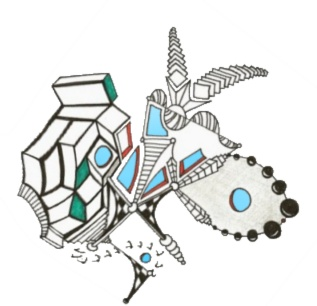

What I Read:
Read in 2009:
Three Cups of Tea (Greg Mortenson and David Oliver Relin) Purple Hibiscus: A Novel (Chimamanda Ngozi Adichie)Five Quarters of the Orange (Harris) Dreamers of the Day: A Novel (Mary Doria Russell) Interpreter of Maladies (Jhumpa Lahiri)
Read in 2008: Under the Banner of Heaven (Krakauer) Kabul Beauty School (Rodrigez) Phantoms in the Brain: Probing the Mysteries of the Human Mind ( V. S. Ramachandran) Pope Joan (Donna Cross) If on a Winter's Night a Traveler (Italo Calvino) When a Crocodile eats the Sun (Peter Godwin) The Diving Bell and the Butterfly (Jean-Dominique Bauby) The Best American Poetry 2007 (The Best American Poetry) Necessary Lies (Kerry Neville Bakken ) My Sister's Keeper (Jodi Picoult) The Flash (Steve Almond) Garlic and Saphires The Kiterunner (Khaled Hosseini) Those Who Save Us (Jenna Blum) Ava's Man (Rick Bragg) Read upon return to US Dec. 2006-2007 Graceland (Chris Abani) Parable of the Sower (Octavia Butler) Einstein's Dreams (Alan Lightman) {read a second time} Eat, Pray, Love (Elizabeth Gilbert) On the Road (Cormic McCarthy) (audio) The Night (Elie Wiesel) Aftert the Quake (Haruki Murakami) A Clockwork Orange (Anthony Burgess) (audio) Giving: How Each of Us Can Change the World (Bill Clinton) Read in Samoa (Oct. 2004 - Dec. 2006) Snow Crash (Neal Stephenson) The Lazy Man's Guide to Enlightenment (Thaddeus Golas) The Alchemist (Paolo Coelho) Digital Fortress (Dan Brown) 1984 (George Orwell) The 5 People You Meet in Heaven (Mitch Albom) The Lovely Bones (Alice Sebold) American Gods (Neil Gaiman) Cat's Cradle (Kurt Vonnegut Jr.) The Pearl (John Steinbeck) Infinite Jest (David Foster Wallace) My Uncle Oswald (Roald Dahl) Siddhartha (Herman Hess) The God of Small Things (Arundhati Roy) Guns, Germs, and Steel (Jared Diamond) The Prince (Niccolo Machiavelli) Spectacular Achievements in Propaganda (Pamphlet Series) (Noam Chomsky) Animal Farm (George Orwell) The Everything Philosophy Book (James Mannion) Ender's Game (Orson Scott Card) Brave New World (Aldous Huxley) The World As I See It (Albert Einstein) The Pleasure of My Company (Steve Martin) Atlas Shrugged (Ayn Rand) Holidays on Ice (David Sedaris) Einstein and Buddha: The Parallel Sayings (edited by McFarlane) The Handmaid's Tale (Margaret Atwood) Darkness at Noon (Arthur Koestler) Secrects, Lies, and Democracy (Noam Chomsky) Sophie's World (Gaarder) Everything is Illuminated (Jonathan Safran Foer) Nine Stories (J.D. Salinger) Imperial Ambitions (Chomsky) Vagabond for Beauty (letters of Everett Ruess/edited by W.L. Rusho) On Bullshit (Harry G. Frankfurt) Cuckoo in the Jam and Other War Zone Fairytales (Butterfly Peace Garden) The Sex Lives of Cannibals (J. Maarten Troost) Zen in the Art of Writing (Ray Bradbury) The Master and Margarita (Mikhail Bulgakov/Translation: Michael Glenny) Ex Libris Confessions of a Common Reader (Anne Fadiman) (Audio Book) Poisonwood Bible (Kigsolver) A Confederacy of Dunces (John Kennedy Toole) The Monk and The Philosopher (Jean-Francois Revel & Mattheiu Ricard) Hardboiled Wonderland/The End of the World (Haruki Marakami) Ishmael(Daniel Quinn) The Little Prince ( Antoine de Saint-Exupéry) The Magic Pudding (Norman Lindsay) *thanks Charlie :)* Catch 22 (Joseph Heller) Getting Stoned with Savages (J. Maarten Troost): A Trip Through the Islands of Fiji and Vanuatu Confessions of an Economic Hit Man (John Perkins)
What I'm Reading Now:
Calvino, Murakami, Thurber, Vonnegut, Hemmingway, Dick, Spanish Books
